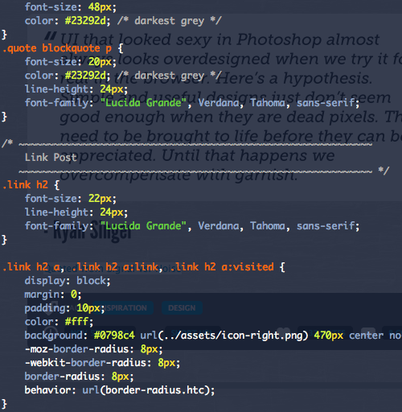

Backburner Theme
I am currently putting the finishing touches on a my first public Tumblr theme that’s based a 2.0 version my current theme. In the end the theme will support every current theme functionality including custom pages, multiple authors, liked posts, and a ton of customization options that will allow people to fully customize the theme—down to switching between light and dark icon sets.